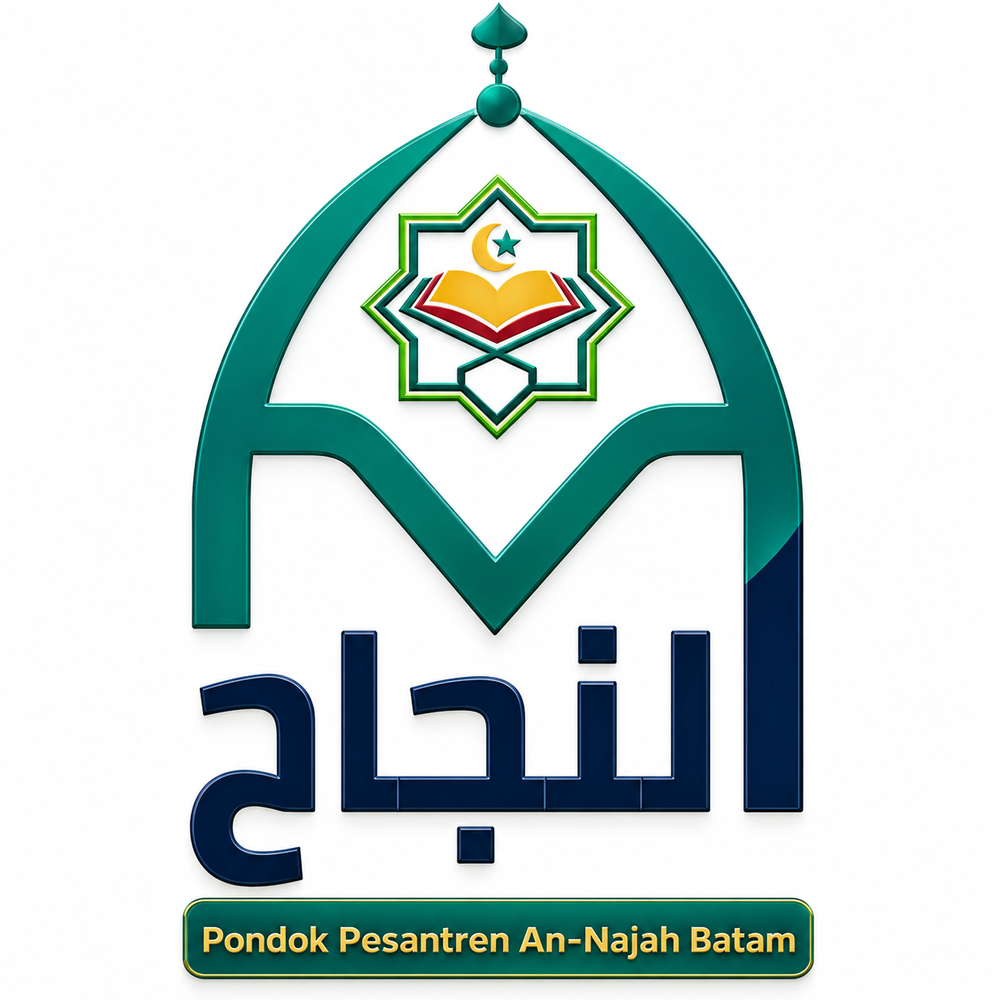
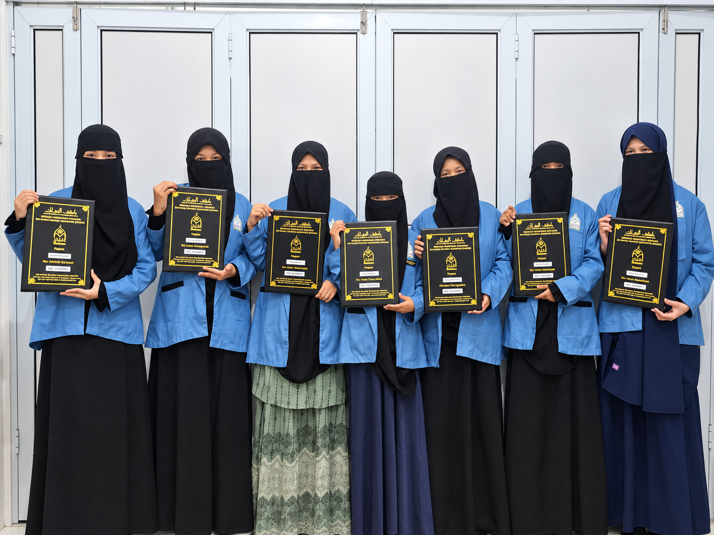
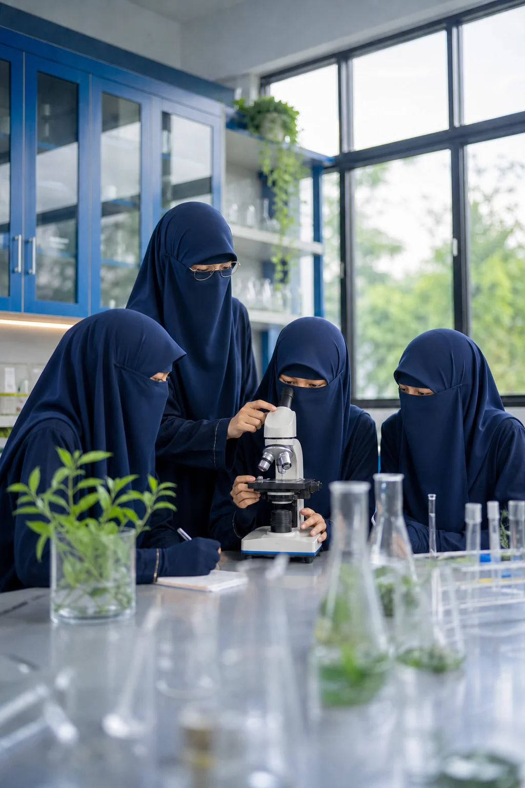

Khusus Putri
Ruang belajar yang diperuntukkan bagi santriwati.

Ilmu. Adab. Sunnah.
Ma'ahad Sunnah Khusus Putri
Di Ma'ahad An-Najah Putri Batam, santriwati mempelajari ilmu agama dan pelajaran umum, serta dibimbing menjaga adab dalam keseharian berlandaskan Al-Qur'an dan Sunnah.
Keunggulan Utama
Ruang belajar yang diperuntukkan bagi santriwati.
Ilmu agama dipelajari bersama pelajaran umum.
Menjadi landasan belajar dan pembinaan adab.
Pendidikan putri pada dua jenjang belajar.

Ma'ahad An-Najah Putri Batam mendampingi santriwati pada jenjang SMP dan SMA. Mereka mempelajari ilmu agama dan pelajaran umum dalam lingkungan khusus putri, dengan pembiasaan ibadah dan adab yang berlandaskan Al-Qur'an dan Sunnah.
Akidah, ibadah, dan ilmu menjadi fondasi setiap langkah pendidikan.
Kesantunan dibiasakan melalui keteladanan dalam ibadah dan keseharian.
Santriwati belajar dan bertumbuh bersama dalam pendampingan asatidzah.
Arah Pendidikan
Jenjang SMP dan SMA memberi ruang bagi santriwati untuk belajar sesuai tahapnya. Arah pendidikan ma'ahad menyatukan ilmu, ibadah, dan pembinaan adab dalam keseharian.
01 / Visi
Menjadi Pondok Pesantren Tahfidz Al-Qur'an dan hadist yang bermutu.
02 / Misi
Pokok Pembelajaran
Tahfidz, bahasa Arab, adab, dan pelajaran umum menjadi bagian dari program pondok.
Pendidikan SMP & SMA
Pada jenjang SMP dan SMA, santriwati mempelajari diniyah, Al-Qur'an, dan mata pelajaran umum. Kegiatan harian juga menjadi tempat berlatih adab, tanggung jawab, dan kemandirian.
Pendidikan tingkat menengah pertama dalam lingkungan khusus putri.
Pendidikan tingkat menengah atas dengan pembelajaran sesuai jenjang.
Diniyah & Al-Qur'an
Pelajaran Umum
Pengembangan Diri
Lingkungan Ma'ahad
Asrama, ruang belajar, perpustakaan, serta tempat ibadah dan olahraga mendukung keseharian santriwati di ma'ahad.
Ruang tinggal untuk membiasakan hidup tertib, mandiri, dan saling menjaga.

Tempat mempelajari pelajaran umum, berdiskusi, dan melakukan pengamatan.
Bacaan agama dan pengetahuan umum menjadi teman belajar santriwati.
Ruang untuk menjaga ibadah, bergerak, dan merawat kebiasaan hidup yang baik.
Video Profil
Belajar, menghafal, bereksperimen, dan bertumbuh bersama dalam lingkungan khusus santriwati.
Catatan Kegiatan
Catatan belajar, kebersamaan, dan kegiatan santriwati dari keseharian di ma'ahad.
Halaqah dan murajaah menjadi ruang saling menyemangati dalam mempelajari Al-Qur'an.
Dari Instagram
Pengumuman, kegiatan santriwati, dan catatan dari pondok dapat dilihat langsung melalui unggahan @ppannajahbatam.
Setiap waktu memiliki tujuan: mendekat kepada Allah, menuntut ilmu, menjaga tubuh, dan belajar bertanggung jawab.
Hari dimulai dengan ketenangan, dzikir, dan murajaah.
Kelas diniyah serta akademik berlangsung aktif dan terarah.
Olahraga, organisasi, bahasa, dan kecakapan hidup.
Belajar mandiri, evaluasi, dan istirahat yang teratur.
Pertanyaan yang Sering Diajukan
Beberapa jawaban singkat tentang jenjang pendidikan dan keseharian santriwati di Ma'ahad An-Najah Putri Batam.
Tanyakan langsungYa. Ma'ahad An-Najah Putri Batam menyediakan lingkungan belajar dan pembinaan khusus santriwati.
Ma'ahad menyelenggarakan pendidikan untuk jenjang SMP dan SMA khusus putri.
Pembelajaran dan pembinaan berlandaskan Al-Qur'an dan Sunnah, dengan perhatian pada akidah, ibadah, ilmu, dan adab sehari-hari.
Ya. Selain diniyah dan Al-Qur'an, santriwati mempelajari mata pelajaran umum sesuai jenjang dan kurikulum yang berlaku di ma'ahad.
Hari-hari santriwati diisi dengan ibadah, belajar, murajaah, kegiatan fisik, dan latihan bertanggung jawab dalam kehidupan bersama.
Silakan menghubungi pengelola terlebih dahulu untuk menanyakan jadwal dan ketentuan kunjungan demi kenyamanan santriwati.
Silaturahmi dan Kunjungan
Terbuka untuk pertanyaan tentang ma'ahad, agenda kunjungan, dan peluang kolaborasi dalam pendidikan.
Kirim EmailHalaman SDN 019, Tembesi, Kec. Sagulung, Kota Batam, Kepulauan Riau 29424
Ust. Said Salamah, S.Pd. M.Pd